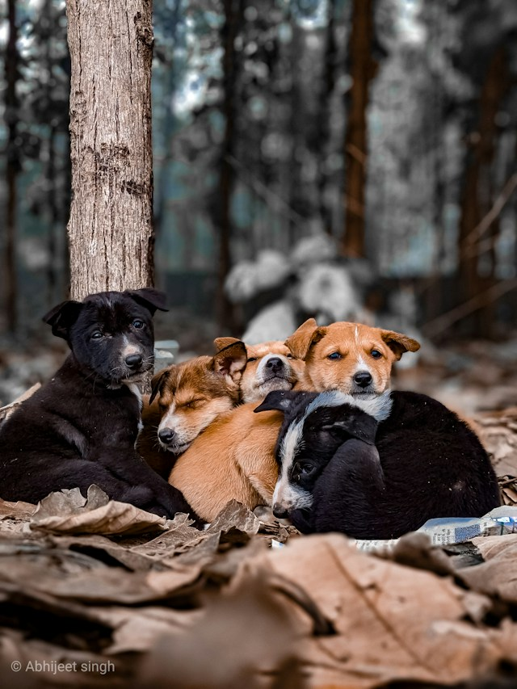

Tutustu erilaisiin koirarotuihin ja katso kuvia koirista.
Koirarotuja on monenlaisia, ja niillä on erilaisia ominaisuuksia ja ulkonäköjä. Tällä sivulla voit tutustua muutamaan rotuun ja hakea niistä kuvia.
Tutustu koiriinValitse rotu alempana ja katso siitä satunnainen kuva.
Labradorinnoutaja on ystävällinen ja aktiivinen koira, joka sopii monenlaisiin koteihin.
Husky tunnetaan energisyydestään, paksusta turkistaan ja sinisistä silmistään.
Beagle on utelias ja seurallinen koira, jolla on vahva hajuaisti.
Tämän sivuston aiheena ovat koirarodut ja niiden kuvat. Sivustolla voi valita eri koirarotuja ja katsoa niistä satunnaisia kuvia.
Koirarodut eroavat toisistaan esimerkiksi koon, luonteen ja liikunnan tarpeen perusteella. Jotkut koirat ovat aktiivisia ja tarvitsevat paljon tekemistä, kun taas toiset voivat olla rauhallisempia.

Koirarotujen galleria